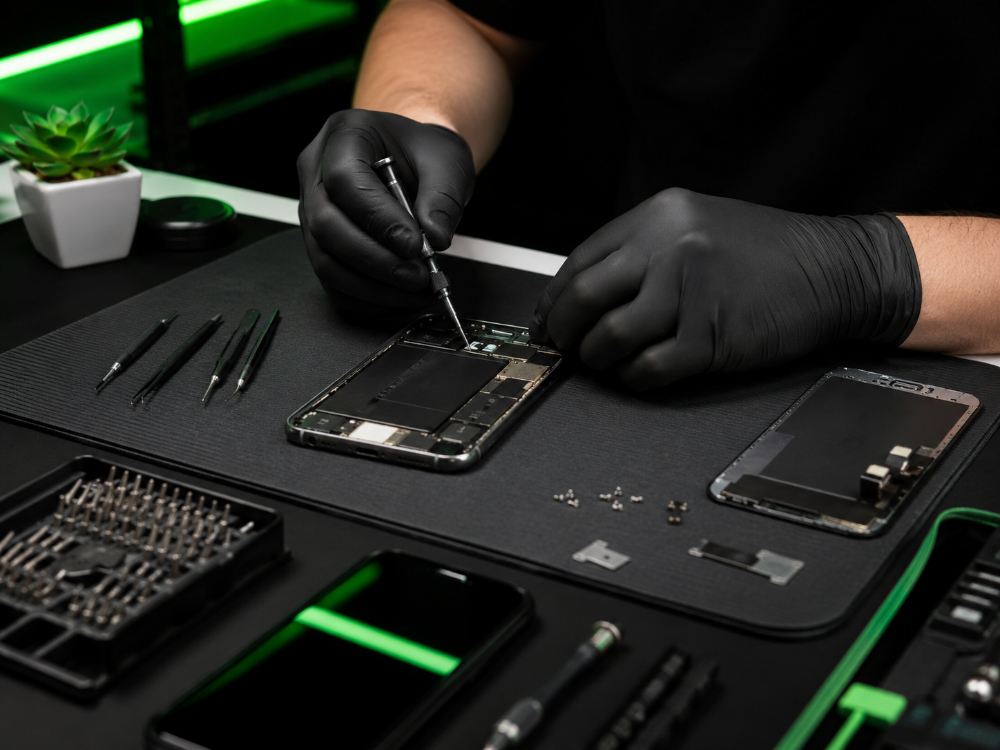
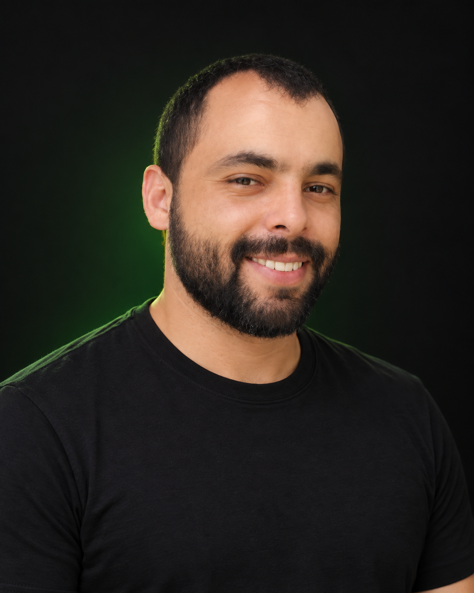

Serviço 01
Celulares
Troca de tela, bateria, conector de carga e outros reparos para seu aparelho voltar a funcionar com segurança.

Manutenção rápida e confiável, com diagnóstico transparente e garantia nos serviços realizados.
Pedir orçamento pelo WhatsAppAtendimento especializado e cuidadoso para encontrar a melhor solução para cada equipamento.

Especialista em diagnóstico e manutenção de smartphones, incluindo telas, baterias, conectores de carga e reparos eletrônicos.
Especialista em notebooks e computadores, com formatação, limpeza, upgrades, suporte técnico e atendimento de helpdesk.
Informe o modelo do aparelho e descreva o defeito para receber uma avaliação inicial.
Falar no WhatsApp